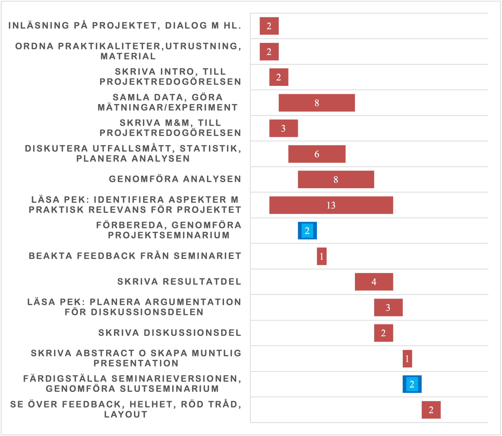

project-plan
Introduction
Injury has reached epidemic proportions worldwide, disproportionately affecting the most productive and the youngest members of society. Trauma, often synonymously used with serious injury, is defined as a physical injury and the body’s associated response (1). Furthermore, trauma remains a leading cause of death and disability worldwide, where it is the foremost cause of death among people under the age of 45 and ranks as the fourth leading cause of death across all ages (2).
Pathophysiology
Among trauma-related conditions, traumatic brain injury (TBI) is a major cause of death and disability worldwide and constitutes a significant public health burden. (3) TBI is the result of an external force causing neurological impairments that may be either transient or permanent. (4) Furthermore, TBI should not be regarded as a single event but rather as a dynamic process. The initial trauma is followed by secondary pathophysiological cascades, including ischemia, oedema, and metabolic disturbances, that develop over time and critically influence long-term outcomes. (5) As such, patients affected often require admission to the intensive care unit (ICU).
Management of TBI
Initial management of TBI spans prehospital and early in-hospital phases and centres on rapid physiological stabilisation and diagnostics in order for secondary injuries to be limited. Protection of the airway in patients with impaired consciousness, adequate oxygenation and normocapnia, and fast correction of hypotension are all prioritised in the initial phase of management as hypoxia and low blood pressures are associated with an increased mortality (6–9). Non-contrast head CT should be performed without delay to identify surgically remediable lesions. Depending on mechanism and physiology, whole-body CT may be used selectively, as randomised data show no mortality advantage over targeted imaging, while observational work underscores the benefit of immediate CT pathways for severely injured patients (10,11). Haemostatic strategies in the early stages, such as administering tranexamic acid within three hours of injury, can reduce mortality (12). After this initial phase, depending on the patient’s condition, management transitions to other areas of the hospital, where sustained prevention of secondary systemic and intracranial insults becomes the primary focus.
The management of TBI in the ICU is particularly challenging. Given the heterogeneity and dynamic nature of the condition, care must prioritise the prevention and limitation of secondary systemic threats such as hypoxia, hypercapnia, arterial hypotension, hyponatraemia and pyrexia. Equal attention must also be directed toward secondary intracranial threats, including expanding haematomas, cerebral contusions and rises in intracranial pressure. (5–7) Although these complexities are often anticipated, they render ICU care especially vulnerable to deviations from optimal practice, thereby posing risks to both patient safety and overall quality of care.
The intensive care of patients with TBI has been addressed in both guidelines and reviews. Multiple recent reviews and guideline updates consistently refer to the Brain Trauma Foundation (BTF) Fourth Edition, which remains a central reference for modern management (5–9). According to the BTF, treatment should be initiated when intracranial pressure (ICP) exceeds 22 mmHg. Cerebral perfusion pressure (CPP) should be maintained between 60–70 mmHg. Prophylactic hyperventilation should be avoided within the first 24 hours, and corticosteroid usage should be refrained from.
(At Karolinska University Hospital, the setting for this study, similar principles are seen in the Traumahandboken. For severe TBI, defined as GCS < 8, early airway protection with intubation in unconscious patients, rapid CT imaging, timely administration of tranexamic acid, and early neurosurgical consultation are recommended. In cases where there are signs of impending herniation, the handbook advises measures such as controlled hyperventilation and osmotherapy with mannitol or hypertonic saline. All this is always in conjunction with urgent neurosurgical evaluation. (Källa Karolinska handboken))
Trauma Quality Improvement
Despite the presence of systems and guidelines in place for these patients, trauma care remains vulnerable to errors, deviations from established practice, and treatment delays, all of which may negatively influence outcomes. In response, the American College of Surgeons developed the Trauma Quality Improvement Program (TQIP), a risk-adjusted benchmarking system designed to assess the quality of trauma care. Through audit filters and peer review, it identifies opportunities for improvement (OFI) and ultimately reduces trauma-related mortality (10,11). Previous studies and reviews have discussed preventable trauma deaths where recurring patterns occur, namely, delays in imaging and care, missed injuries, deviations in care regarding airway-related care, haemorrhage control, and fluid management (12–16). Importantly, some of these findings were observed in high-performing level I trauma centres, underscoring that even mature systems remain vulnerable to error. Furthermore, injuries to the central nervous system account for a substantial proportion of trauma-related deaths, as demonstrated in analyses from large registries such as the Arkansas Trauma Registry (16). Yet, while previous research has described OFI in trauma resuscitation and in general ICU trauma cohorts, relatively little is known about the prevalence, nature, and determinants of OFI specifically among patients with TBI.
Previous papers at Karolinska University Hospital have contributed to this field by describing OFIs across different aspects of trauma care. In 2023, Hussein A. et al. analysed patient- and process-related factors during trauma resuscitation and concluded that variables such as time to first CT and injury severity were strongly associated with OFI (17). Cao ES. et al. continued the focus on ICU cohorts, presenting that 9.9% ICU-admitted adult trauma patients experienced at least one OFI (1). Most recently, Szolnoky K et al. assessed OFI patterns in trauma cohorts and demonstrated that, although overall incidence declined over time, patients with TBI remained likely to have preventable shortcomings in care (18).
Methods
Study Design
A single-centre, registry-based retrospective cohort study was conducted at Karolinska University Hospital in Solna (NKS). The trauma registry for NKS is a comprehensive trauma registry that reports to the Swedish National Trauma Registry, SweTrau, and is compliant with the Utstein template for uniform reporting after trauma (Källa Utstein Template). As such, the registry prospectively records patient demographics, prehospital and emergency department physiology, times of key interventions such as imaging, surgery and transfer, injury severity scores, and in-hospital outcome.
The Swedish Trauma Registry includes patients of all ages who have sustained serious injuries from traumatic events such as falls, traffic incidents, or other external violence. Since 2024 , patients have been included if a trauma team activation has occurred, regardless of injury severity, or if they have a New Injury Severity Score (NISS) greater than fifteen without trauma team activation. Patients transferred to a hospital within seven days of the traumatic event with a NISS greater than fifteen are also included. Exclusion criteria are cases where the only traumatic condition is chronic subdural haematoma, trauma alarms without an underlying traumatic event, patients with protected identity, and patients declared dead on arrival. Since these inclusion and exclusion criteria have changed over time, patients in this study will be filtered to ensure they fulfil the criteria relevant to the study period (Källa SweTrau årsbok 2024).
To identify opportunities for improvement, the trauma registry was linked to the hospital’s local trauma care quality database. Linkage was performed using the Swedish personal identity number, after which trauma registry variables and quality review outcomes were extracted for analysis of patient and process factors associated with opportunities for improvement.
Setting
Karolinska University Hospital in Solna houses Trauma Centre Karolinska (TCK), Sweden’s largest provider of advanced trauma care for both adults and children. According to the definition of the American College of Surgeons, Karolinska University Hospital in Solna serves as the designated Level 1 trauma centre for the greater metropolitan area of Stockholm. This designation requires around-the-clock availability of key services, including neurosurgery, general surgery, orthopaedic surgery, anaesthesia and intensive care, as well as diagnostic and interventional radiology and consultants from other relevant specialities. (Källa från American College of surgeons, plus källa som säger NKS har alla dessa saker). Also, the ICU units in Karolinska Universitets sjukhuset are all recognised as Level 3 units per the Svenska Föreningen för Anestesi och Intensivvård. (källa )
Furthermore, the trauma registry includes about 14000 patients admitted between 2012 and 2023. The trauma care quality database is a subset of this registry, encompassing approximately 8,000 patients selected for review between 2014 and 2023. Screening for potential opportunities for improvement was implemented in 2013 for selected patient cases. Initially, case selection was based on a limited number of audit filters and the judgment of a small group of clinicians directly involved in trauma care. Since 2017, a standardised set of audit filters has been consistently applied, and all trauma patients admitted to the hospital are screened for potential opportunities for improvement. The process has expanded to include a broader group of senior clinicians and nursing staff, ensuring a systematic and comprehensive review. Patients flagged through the audit filters, and therefore have potential OFI, undergo discussion in structured multidisciplinary morbidity and mortality conferences, where representatives from relevant specialties and professions involved in trauma care are involved. The discussion focuses on establishing whether there were any preventable events or deviations from standards of practice. The final classification of whether an opportunity for improvement is present is determined by consensus among the peer-review group. As such, subjectivity is minimised and ensures that decisions reflect a collective judgement. Whether or not an OFI is identified, the decision of the review is recorded in the trauma care quality database, ensuring systematic documentation of positive findings and cases without deviations.
Participants
Included in the study were all adult patients with TBI recorded in the Karolinska trauma registry between 2012 and 2023 who also had been screened for opportunity for improvements. Furthermore, TBI was defined as (a GCS score of ≤8 combined with an Abbreviated Injury Scale ≥3 for the head region …. ) Patients were eligible irrespective of level of care and were not restricted to intensive care admissions.
Patients younger than 18 years were excluded, as their trauma follows separate clinical care systems and quality review processes that differ from those for adults . Also excluded were patients declared dead on arrival, since assessment of opportunities for improvement in these cases is not relevant to the aim of this study.
Variables
Outcome
The primary outcome of this study was the presence of one or more opportunities for improvement during the management of patients with TBI. As mentioned, OFIs were adjudicated after a screening process with audit filters and a subsequent review in multidisciplinary morbidity-and-mortality conferences. Following the peer review, the result of each case discussion was recorded in the trauma care quality register and was presented as a binary variable, “Yes - At least one OFI identified” and “No - No OFI identified”.
Patient factors and processes
The variables chosen to be analysed for this study were those from the trauma registry, based on the locally used audit filters, standard epidemiological factors and the factors registered in the Swedish National Trauma Registry. These could be divided into categorical and continuous variables.
Certain continuous variables were retained in their continuous form for analysis, but others were categorised into clinically meaningful groups to facilitate descriptive statistics and subgroup analyses. The continuous variables include…
And those who were categorised were….
Furthermore, the categorical variables include…
Statistical methods
Project Update and Timeline
This is part B) in the project plan [sv: projektredogörelse].
Save the image generated from the Gantt chard spreadsheet into the assets folder, rename it to project-gantt.png

Back-up Plan
This is part C) in the project plan [sv: projektredogörelse]